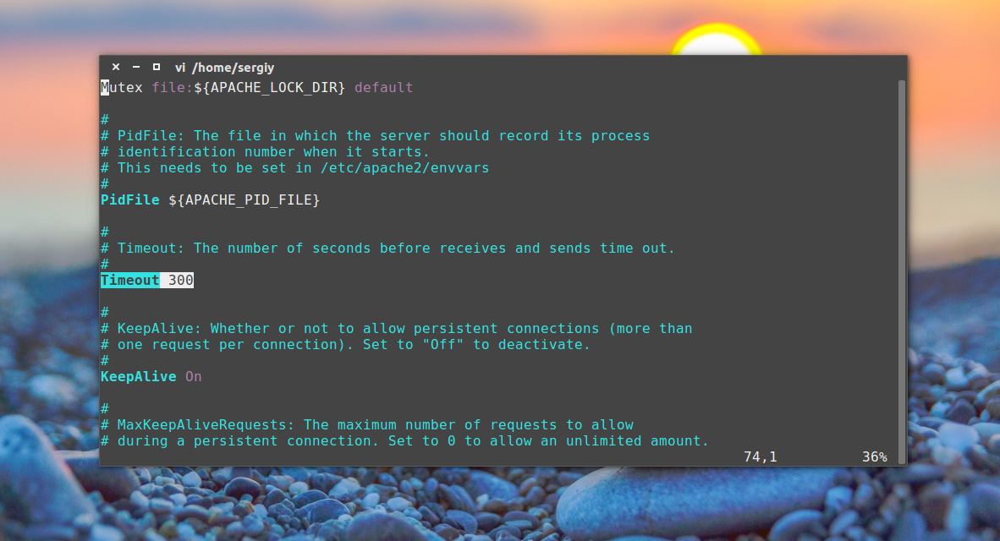
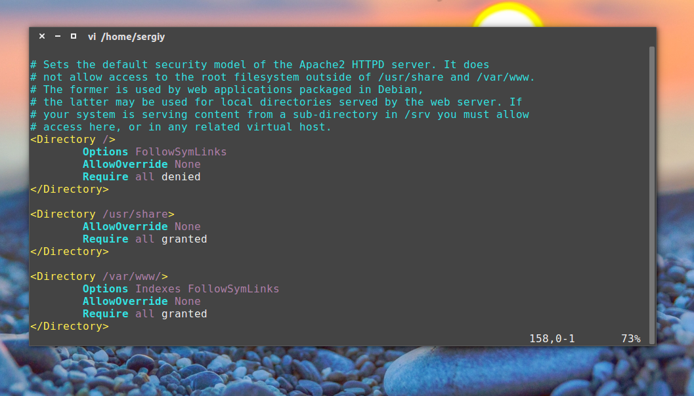
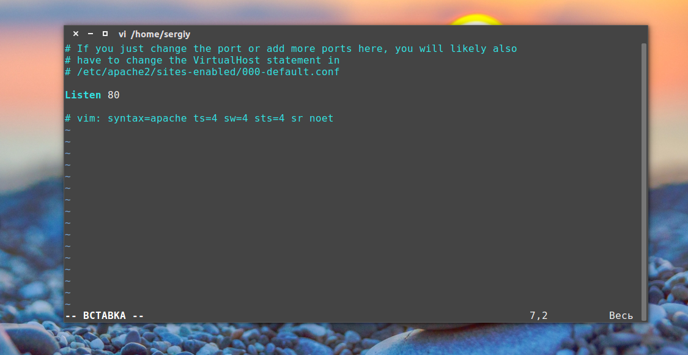
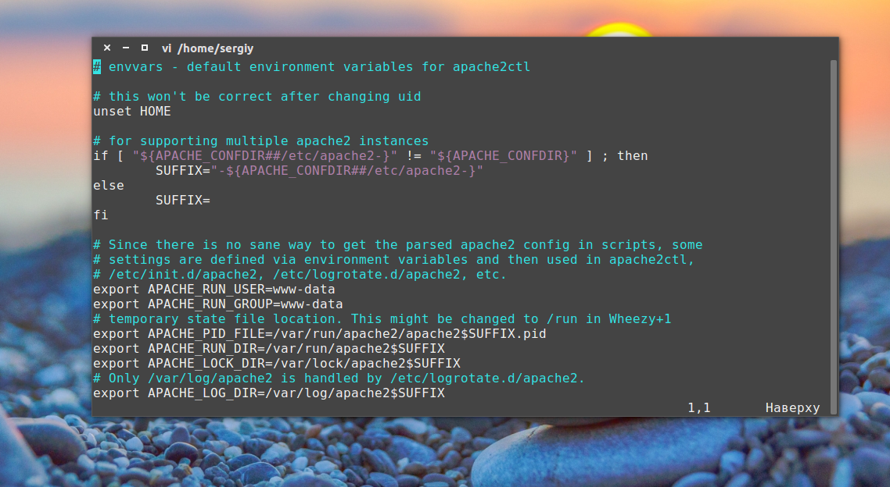
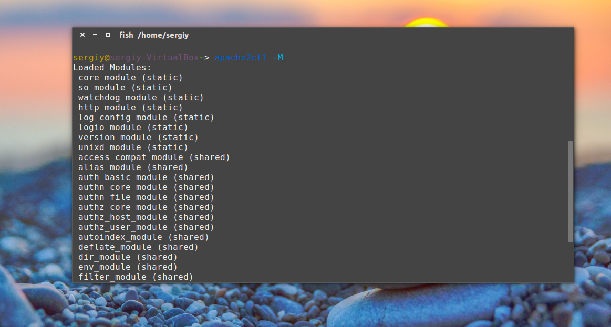
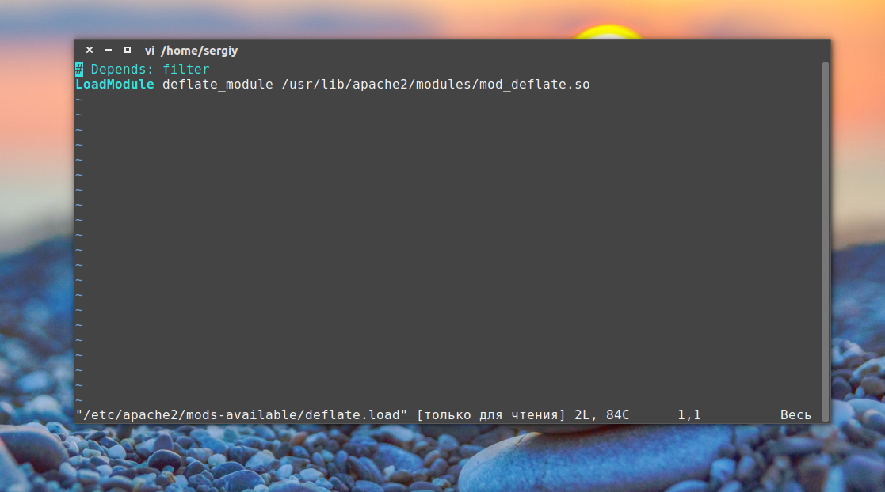
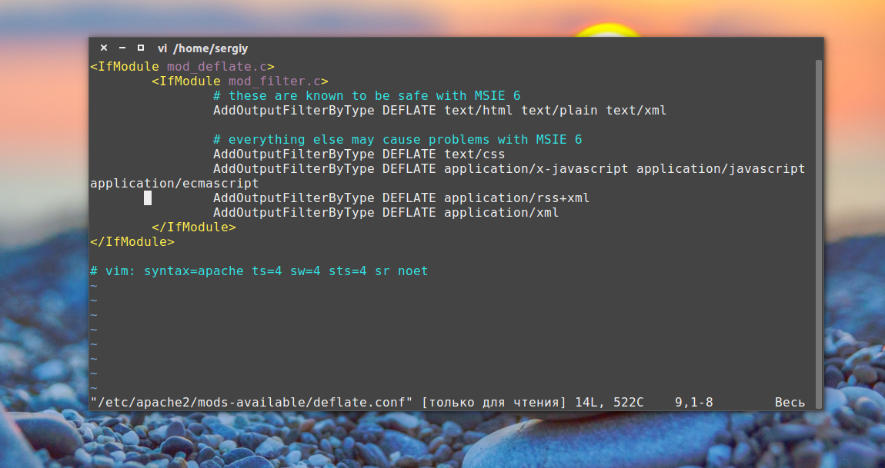
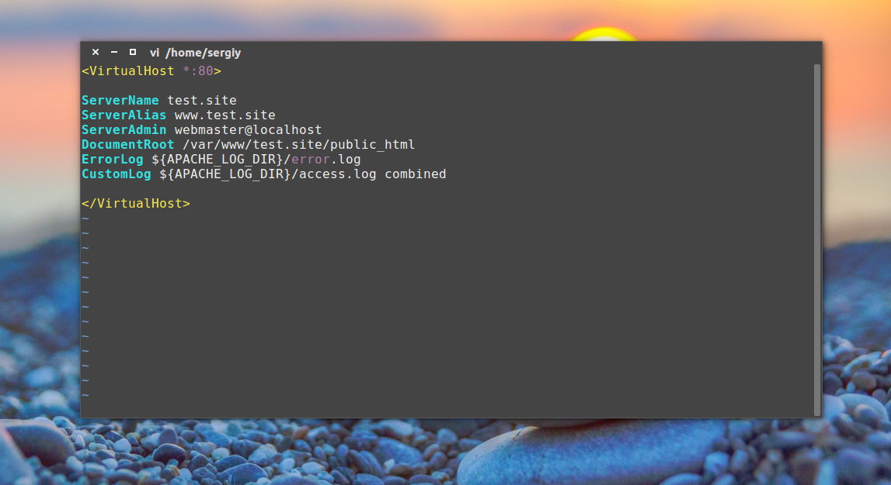

Установка и настройка сервера Apache
Сервер Обновлено: 30 сентября, 2020 17 admin
Apache - это популярнейший свободный веб-сервер. Состоянием на 2020 год он используется на 33% всех сайтов интернета, а это приблизительно 304 миллиарда сайтов. Этот веб-сервер был разработан в далеком 1995, как замена для популярного того сервера NCSA и исправил множество его проблем. Ходят слухи что его имя походит от a patchy, заплатка, так как он исправлял ошибки NCSA. Сейчас же, это кроссплатформенная программа, поддерживающая Windows, Linux и MacOS и обеспечивающая достаточную гибкость, настраиваемость и функциональность. Программа имеет модульную структуру, что позволяет расширять ее функциональность почти до бесконечности с помощью модулей.
Установить Apache в Linux можно с помощью нескольких команд, но программа предоставляет очень большое количество настроек, которые можно изменить, а также модулей, после включения которых она будет работать лучше. В этой статье будет рассмотрена установка и настройка Apache, в качестве основной системы мы будем использовать Ubuntu, но вы можете повторить эти действия в любом другом дистрибутиве. Будет рассмотрена не только установка самой программы, но и способы ее настройки, настройка виртуальных хостов apache, а также самые полезные модули.
На данный момент, самая новая версия программы 2.4 поэтому и будет рассмотрена настройка apache 2.4. Как я уже говорил, в Linux программа устанавливается буквально в пару команд. Для установки в Ubuntu сначала обновим систему до самой новой версии:
sudo apt update
sudo apt upgrade
Затем установка apache2:
sudo apt install apache2
В других дистрибутивах пакет программы называется либо так, либо httpd и его установка у вас не вызовет трудностей.
После завершения установки нужно добавить веб-сервер в автозагрузку, чтобы не запускать его вручную после включения компьютера:
sudo systemctl enable apache2
Уже прошло то время, когда конфигурация Apache хранилась в одном файле. Но оно и правильно, когда все распределено по своим директориям, в конфигурационных файлах легче ориентироваться.
Все настройки содержатся в папке /etc/apache/:
Как вы заметили есть две папки для conf, mods и site. Это available и enabled. При включении модуля или хоста создается символическая ссылка из папки available (доступно) в папку enable (включено). Поэтому настройки лучше выполнять именно в папках available. Вообще говоря, можно было бы обойтись без этих папок, взять все и по старинке свалить в один файл, и все бы работало, но сейчас так никто не делает.
Сначала давайте рассмотрим главный файл конфигурации:
vi /eta/apache2/apache2.conf

Timeout - указывает как долго сервер будет пытаться продолжить прерванную передачу или прием данных. 160 секунд будет вполне достаточно.
KeepAlive On - очень полезный параметр, позволяет передавать несколько файлов, за одно соединение, например, не только саму html страницу, но и картинки и css файлы.
MaxKeepAliveRequests 100 - максимальное количество запросов за одно соединение, чем больше, тем лучше.
KeepAliveTimeout 5 - таймаут соединения, обычно для загрузки страницы достаточно 5-10 секунд, так что больше ставить не нужно, но и рвать соединение раньше чем загрузились все данные тоже не нужно.
User, Group - пользователь и группа, от имени которых будет работать программа.
HostnameLookups - записывать в логи вместо ip адресов доменные имена, лучше отключить, чтобы ускорить работу.
LogLevel - уровень логирования ошибок. По умолчанию используется warn, но чтобы логи заполнялись медленнее достаточно включить error
Include - все директивы include отвечают за подключение рассмотренных выше конфигурационных файлов.

Директивы Directory отвечают за настройку прав доступа к той или иной директории в файловой системе. Синтаксис здесь такой:
<Directory /адрес/в/файловой/системе/>
Параметр значение
</Directory>
Здесь доступны такие основные опции:
AllowOverride - указывает нужно ли читать .htaccess файлы из этой директории, это такие же файлы настроек и таким же синтаксисом. All - разрешать все, None - не читать эти файлы.
DocumentRoot - устанавливает из какой папки нужно брать документы для отображенияа пользователю
Options - указывает какие особенности веб-сервера нужно разрешить в этой папке. Например, All - разрешить все, FollowSymLinks - переходить по символическим ссылкам, Indexes - отображать содержимое каталога если нет файла индекса.
Require - устанавливает, какие пользователи имеют доступ к этому каталогу. Require all denied - всем запретить, Require all granted - всем разрешить. можно использовать вместо all директиву user или group чтобы явно указать пользователя.
Order - позволяет управлять доступом к директории. Принимает два значения Allow,Deny - разрешить для всех, кроме указанных или Deny,Allow - запретить для всех, кроме указанных. Теперь мы можем запретить доступ к директории для всех: Deny from all, а затем разрешить только для приложения от losst.ru: Allow from losst.ru.
Здесь все эти директивы не используются, поскольку нас устраивают значения по умолчанию, но вот в файлах .htaccess они могут быть очень полезны.
У нас остался файл /etc/apache2/ports.conf:

В нем только одна директива, Listen, которая указывает программе на каком порту нужно работать.
Последний файл /etc/apache2/envvars, его вы вряд ли будете использовать, в нем указанны переменные, которые можно использовать в других конфигурационных файлах.

Дальше поговорим немного о htacess. Совсем немного.
Настройка сервера Apache через htaccess
Файлы .htaccess позволяют настраивать веб-сервер на Ubuntu для поведения в определенной директории. Все инструкции, указанные в этом файле выполняются как бы они были обвернуты в тег <directory адрес_папки> если бы находились в основном файле.
Важно заметить, что для того, чтобы сервер читал инструкции из .htaccess настройки для этой папки в основном файле или файле виртуального хоста не должны содержать AllowOverride None, чтобы могли работать все настройки нужно AllowOverride All.
А в остальном, здесь может выполняться любая настройка сервера apache, от включения модулей, до обычного изменения доступа к папке. Поскольку все параметры мы уже рассмотрели просто приведем пару примеров:
Order Deny,Allow
Deny from all
Запрещает всем доступ к этой папке, важно применить, для папок с конфигурацией. Чаще всего .htaccess используется для работы с модулем mod_rewrite, который позволяет изменять запросы на лету:
RewriteEngine on
RewriteRule ^product/([^/\.]+)/?$ product.php?id=$1 [L]
Но это очень обширная тема и выходит за рамки этой статьи.
Как я уже говорил, Apache - модульная программа, ее функциональность можно расширять с помощью модулей. Все доступные модули загрузчики и конфигурационные файлы модулей находятся в папке /etc/apache/mods-available. А активированные в /etc/apache/mods-enable.
Но вам необязательно анализировать содержимое этих папок. Настройка Apache 2.4 с помощью добавления модулей выполняется с помощью специальных команд. Посмотреть все запущенные модули можно командой:
apache2ctl -M

Включить модуль можно командой:
sudo a2enmod имя_модуля
А отключить:
sudo a2dismod имя_модуля
После включения или отключения модулей нужно перезагрузить apache:
sudo systemctl restart apache2
Во время выполнения одной из этих команд создается или удаляется символическая ссылка на файл модуля с расширением load в директории mods-available. Можете посмотреть содержимое этого файла, там только одна строка. Например:
vi /etc/apache2/mods-available/deflate.load

Это к тому, что активировать модуль можно было просто добавив эту строчку в файл apache2.conf. Но принято делать именно так, чтобы избежать путаницы.
Настройки модулей находятся в той же папке, только в файле с расширением .conf вместо load. Например, посмотрим настройки того же модуля для сжатия deflate:
vi /etc/apache2/mods-available/deflate.conf

Файлы в папке conf-available, это такие же модули, только они установлены отдельно от apache, это может быть конфигурационные файлы для включения модуля php или любого другого языка программирования. Здесь работает все точно так же, только команды для включения и отключения этих модулей немного другие:
a2enconf имя_модуля
a2disconf имя модуля
Как вы убедились, включать модули очень просто. Давайте включим несколько необходимых, но не включенных по умолчанию модулей:
sudo a2enmod expires
sudo a2enmod headers
sudo a2enmod rewrite
sudo a2enmod ssl
Модули expires и headers уменьшают нагрузку на сервер. Они возвращают заголовок Not Modified, если документ не изменился с последнего запроса. Модуль expiries позволяет устанавливать время, на которое браузер должен кэшировать полученный документ. Rewrite позволяет изменять запрашиваемые адреса на лету, очень полезно при создании ЧПУ ссылок и т д. А последний для включения поддержки шифрования по SSL. Не забудьте перезагрузить apache2 после завершения настроек.
Настройка виртуальных хостов Apache
Было бы не совсем удобно, если на одной физической машине можно было размещать только один сайт. Apache может поддерживать сотни сайтов на одном компьютере и выдавать для каждого из них правильное содержимое. Для этого используются виртуальные хосты. Сервер определяет к какому домену приходит запрос и отдает нужное содержимое из папки этого домена.
Настройки хостов Apache расположены в папке /etc/apache2/hosts-available/. Для создания нового хоста достаточно создать файл с любым именем (лучше кончено с именем хоста) и заполнить его нужными данными. Обернуть все эти параметры нужно в директиву VirtualHost. Кроме рассмотренных параметров здесь будут использоваться такие:
Например:
vi /etc/apache2/sites-available/test.site.conf

<VirtualHost *:80>
ServerName test.site
ServerAlias www.test.site
ServerAdmin webmaster@localhost
DocumentRoot /var/www/test.site/public_html
ErrorLog ${APACHE_LOG_DIR}/error.log
CustomLog ${APACHE_LOG_DIR}/access.log combined
</VirtualHost>
Виртуальные хосты, как и модули нужно активировать. Для этого есть специальные утилиты. Чтобы активировать наберите:
sudo a2ensite test.site
Здесь test.site - имя файла виртуального хоста. Для отключения тоже есть команда:
sudo a2dissite test.site
Настройка виртуальных хостов Apache завершена и на публичном сервере это все бы уже работало, но если вам нужна настройка Apache на домашней машине, то вы ваш новый сайт не откроется в браузере. Браузер не знает такого сайта. И откуда ему знать? DNS службы не могут ничего сообщить об этом доменном имени. Но в системе Linux мы можем сами указать ip адреса для доменных имен в файле /etc/hosts. Поэтому добавляем в конец файла такие строки:
vi /etc/hosts
127.0.0.1 test.site
127.0.0.1 www.test.site
Вот, ну теперь будет работать, открывайте браузер, проверяйте.
Вот и все. Установка и настройка Apache linux завершена, вы можете использовать программу для размещения ваших сайтов. Более того, вы не просто настроили ее, вы разобрались со всеми подробностями и теперь знаете чуточку больше. Если у вас остались еще вопросы, пишите в комментариях!
Похожие записи: